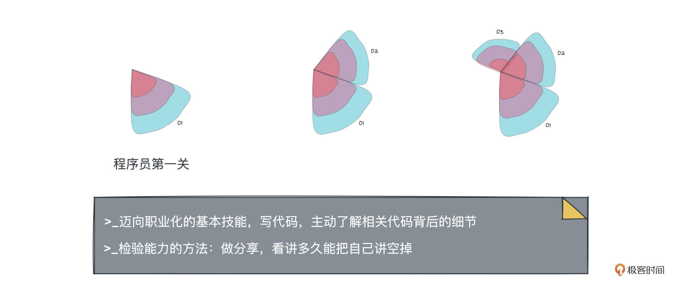
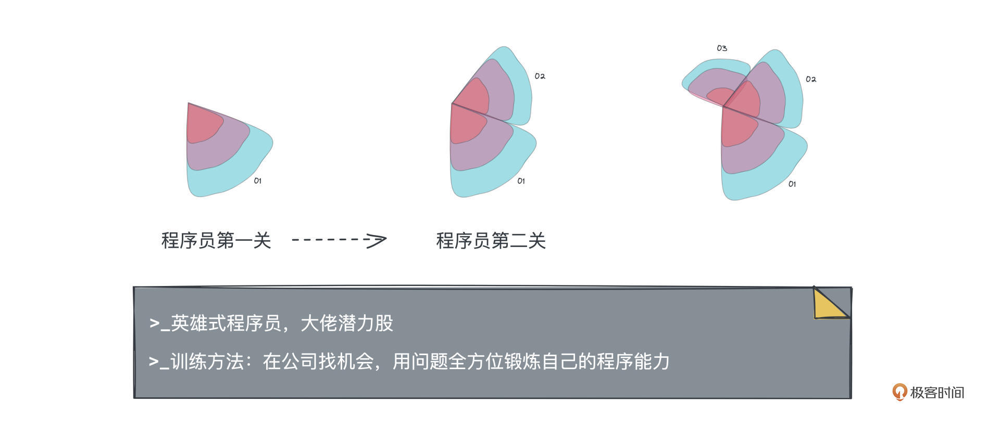
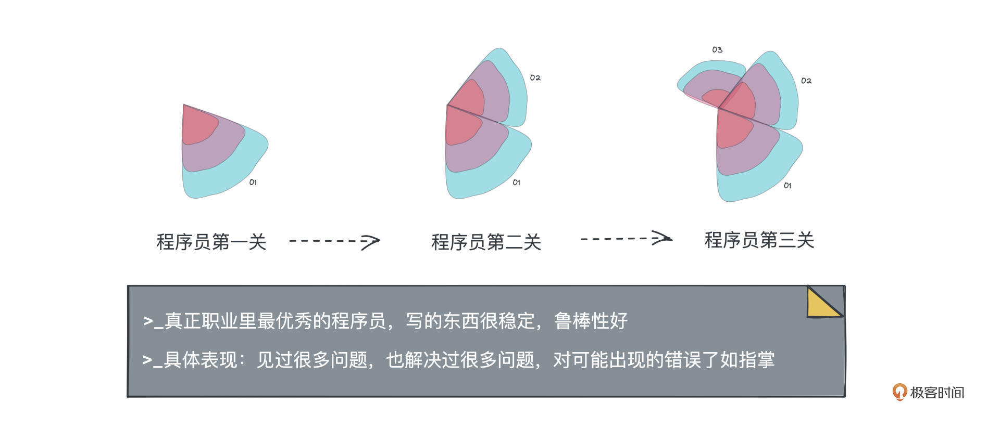

- 01 小厂项目：做程序员不难，难的是做职业程序员.md.html
- 02 小厂创业：做出一个产品，卖给所有人.md.html
- 03 淘宝HSF：能让淘宝出重大故障的就那批人.md.html
- 04 淘宝消防队：真正最优秀的程序员不应该是英雄.md.html
- 05 HBase_T4：Leader最重要的，说白了是要赌未来.md.html
- 06 异地多活：技术圈子的人，见过猪跑很重要.md.html
- 07 运维团队：我能干，只是我不想干而已.md.html
- 08 基础团队：研发效能部门，解决不了研发效能问题.md.html
- 09 统一调度：只是问题非常多而已，摔出来就行了.md.html
- 10 出走大厂：离职？还是不离职？这是一个问题.md.html
- 11 CEO心得：大厂出来创业，最大问题是对钱没概念.md.html
- 团队：在人身上，你到底愿意花多大精力？.md.html
- 开篇词 这一次，我们来采访毕玄.md.html
- 成事：技术人最大的问题就是情怀化.md.html
- 文化：你所在的团队，有多少人敢讲真话？.md.html
- 方向：技术演进，到底该怎么思考未来？.md.html
- 架构：架构师只是个角色，不是个岗位.md.html
- 番外：一位险些没上得了大学的青年，如何开启计算机征程.md.html
- 捐赠
04 淘宝消防队：真正最优秀的程序员不应该是英雄
你好，我是叶芊。- - 上一讲我们简单聊到毕玄进淘宝后做HSF的经历，以前他做网站访问量10万不到，上来一下到200万，再直接跳到1亿，他的心情也从“信心爆棚”直接跳到了“上线爆雷”，毕竟刚转正就让公司出了严重故障，他表示压力山大，但是自己心态还行。- - 今天我们接着他的经历聊，当时在淘宝他还有一段相当有趣的经历——淘宝消防队，在这里他锻炼了自己的解决问题能力，也结识了阿里的知名大神多隆，但是在采访中他却说这种机会对公司来说其实是个恶性循环。- - 为什么他会有这个看法？淘宝消防队的经历对他来说究竟意味着什么？我们开始今天的对谈。
- 极客时间：看你的经历，HSF做完你就去淘宝消防队了？
毕玄：不是，淘宝消防队是一个插曲，就它是个民间组织。因为09年淘宝经常出问题，出问题以后，当时的最大问题是没有人去解决。
以前我们就一个系统，如果出了问题，大家都会去看看是不是跟自己相关，但是我们在09年以后有100多个系统，大家都觉得如果出问题了，肯定不是我的问题，所以就没有人查问题，导致那段时间很糟糕，客服感觉明明有很多用户在投诉，但技术这边反馈很慢，都不大去解决，就很混乱。
后来我们运维线有一个人很不爽，就拉了个群，这个群的名字叫“消防队”，群里拉了一些我们觉得愿意去解决问题的人，后来只要出问题，这个群里的人就会去解决。
极客时间：噢没有组织上的约束，那这些人确实没有责任必须要处理问题。
毕玄：没有。只是这帮人觉得问题老没有人解不好，当然还有一个原因是这帮人比较喜欢解问题，有这个爱好，以前你想解也没有问题，现在你一进这个群简直了，只要想解，问题一直有。然后我们就有一帮人进了这个消防队。
这个群以前有个默认规则是：不允许M线的人进来。阿里是P线、M线，M偏管理。后来有一个副总裁不小心被拉进来，但很快就被踢出去了，然后他就问为什么要把我踢掉？我们说因为解决故障的时候不需要你，解决故障的时候需要P线的人，而不是M线的人。他也很无语。
极客时间：副总都能直接踢吗？这个操作挺勇的。
毕玄：这个群慢慢大家都知道了，因为大家发现只要反馈给这个群，问题是会被解决的，就形成了效应，加上又没有官方组织。可能半年多的时候，不知道为什么群被更多的高层知道了，因为我们最早说一不允许M线，二要低调，最好没有人知道这个群的存在，尤其高层。因为我们要操作生产环境，理论上肯定是有点违规性质的，权限会过大，所以我们也不想太高调。
但被知道了以后，在淘宝年会上，公司临时决定要给这个虚拟组织颁奖，好像是总裁特别奖之类的。我们就突然被通知你们的群得了个奖，颁的时候我们印象都很深刻，因为是临时的来不及订奖品，就从现场，当时在黄龙体育中心，找了一个灭火器，颁给了这个消防队，然后颁奖的时候还跟我们说，等会儿下来，记得把这个灭火器还回去。
极客时间：所以是给了虚拟团队一个虚拟奖。
毕玄：就是给一个荣誉，我们都笑死了。
后来公司知道了，觉得不能靠虚拟组织，这个事情还得官方化，所以成立了官方的消防群，那就不一样了，进群的责任有一条就是处理问题。但尽管有官方了，我们有少数几个人被列在了某个名单里，那个名单里的人被特批拥有全部权限。但这是因为我们过去做了很多事情。
反正当时对我来讲挺好的，借机学了很多怎么解决问题，而且多隆也在里面，我跟多隆就是那样熟起来的。以前我只知道他很神，但不知道哪里神，但在消防队我充分感觉到了为什么，很多问题很难被解决，但多隆基本都能解决，而且几乎横跨所有领域，这太夸张了。
极客时间：这种解问题也是非常锻炼人的机会吧？因为我看你写自己的技术成长过程，总会提到在淘宝消防队的这段。
毕玄：因为这是个训练。我后来跟多隆总结出来就是“卖油翁，唯手熟尔”，你越被喂就越熟练，越熟练就越被喂，就像打游戏一样。但这是个什么循环？你可以认为是个良性，也是恶性。
对个人就是良性循环，比如说你解多了，公司很多人都觉得你解问题不错，所以大家有问题都找你，你被训练得越来越惊艳。但恶性就是公司其他人没有机会了，因为处理问题通常都是很紧急的，大家一定会第一时间想，谁能最快解决，就找谁。
极客时间：你淘宝消防队的这段经历，是不是给自己赢得了很多信任，也为你后面的很多机会做了铺垫？因为像你这种刚开始出于兴趣去做，后来被问题训练得越来越强，这种人，在技术的人眼里应该会相当受认可吧。
毕玄：通常来讲技术圈里，每家公司大家觉得最牛的那个人，多数是解决问题能力特别强的，公司的很多危机时刻，是他出来把问题解了，鲁肃当年就是这种。很神奇，阿里有多隆，Google有Jeff Dean，百度据说也有个这样的，腾讯也有，好像每家公司都会有一个神一样的存在，大家觉得没有什么问题是他解不了的。
后来我们说还有另外一种，但这种不显眼。因为解决问题就很像英雄，出了问题然后你出面把它解决掉，另一种人是他写的东西几乎没有出过问题，就不会被暴露出来，但这种人其实是真正要挖出来的。因为前面的不挖他就在那了，不需要挖。
极客时间：英雄和这种不出问题的，是不同的能力水平吗？
毕玄：程序员的技能水平我一直说可以分成三段。
第一段是你的基本技能，比如做这个业务要写相应的代码，那这个代码相关的东西你得非常了解，包括背后的细节。我们觉得这是程序员的第一关，迈向职业化。
说实话这跟公司中、小、大没有任何关系，关键看你对自己的要求，公司可能不会明文说你要怎样，尤其是中小公司，因为说实话，每家公司不对个人成长负任何责任，反正你没成长，公司大不了换一个人。但你自己应该有追求，用到的所有东西都应该去了解它背后是怎么回事，否则现实讲很容易被淘汰的。
极客时间：这里想多聊两句，你有没有什么衡量自己了解程度的具体方法？你是怎么做的？
毕玄：写文章和分享。我觉得分享是很大的挑战，有些东西你觉得自己很懂，真正讲两个小时，你可能就挂了。
以前博士（王坚）给我们上课，讲怎么判断一件事是不是个问题，因为大家会提出一堆公司可能存在的问题，他说，你们如果能就这个问题讲一天，说明这真的是个问题，如果不能，说明这根本不是个问题。
因为吐槽一个公司的问题很简单，关键是这是不是真问题，而且对高级别的人来讲，肯定也要想怎么解，如果你能讲一天，这才是公司值得重视的问题，说明解法很复杂，这就真是个问题。如果很简单，公司肯定会解的。
这就像技术分享，博士会挑战我们，你们不是觉得自己很牛吗？觉得对这个很精通吗？来，给我做个分享。很多人发现上去只能讲两个小时，这其实就是你掌握的全部，我以前在内部讲JVM，最早也只能讲两个小时，后来我能讲两天。
这是可以训练的。所以最重要的是先把一个东西讲厚，当然另一个技能是能不能把要讲一天的东西5分钟讲完，但首先要有讲厚的能力，不能上来就讲5分钟。
博士那一堂课是我们有史以来最受教的一堂课，因为这是一个很简单的方法，但所有人都可以被衡量出来。
那之后我们就懂了，后来跟很多技术线的人说，检验自己的能力有一个很简单的方法，就是分享，你讲多久能把自己讲空掉，就是你能力的极限。很多人用中文随便能讲两个小时，一换成用英文讲，10分钟就讲完了，这一看就不靠谱，这其实就是你的技能。

极客时间：好，第一段是把基础打好，程序员技能水平的第二段是什么？
毕玄：第二种，在程序员世界里，通常容易被认可的就是解决问题的人，就是英雄式人物。但这确实也有一个问题，因为解决问题的能力，目前看必须靠问题训练出来，很难靠自学，除非你给自己造一些问题，但还是非常难，最好有实战的机会。
极客时间：有问题出现的这种机会，是每个公司都有的吧？
毕玄：对，因为每家公司都会出问题。你看好了，出现问题的时候，关键看有哪些人，跟这个事情一毛钱关系没有，他还冲上来，掺和一下，一定会有这样的人，每家公司都会有。
虽然开始掺和的可能也没什么用，但他掺和多了就不一样，这个人慢慢就会得到信任，然后他的机会越来越多，就会进入良性循环。这种人会慢慢成为程序员圈里的大牛，大家都会知道他，而且大家都会特别服他，不服不行，因为你真的干不过他。
就像多隆，你们不服对不对？来呀。因为我们老说阿里最神的技术人是多隆，后来阿里有些新人不认识他，内网就有人说凭什么？他做了什么？结果炸出来一堆老员工，全部出来喷上面的新员工说你们知道啥。
多隆很低调，不像我们这些很喜欢在台前的人，但事实上他解决问题就是比很多人强很多，这是经过事实论证的。程序员要服人还挺难，但解决问题绝对是一个，大家正面PK，两人一起解决，他就是比你快，那你还说啥？你说你能力比他强，那不可能。

极客时间：所以第一关先把个人基础能力搞好，再当一个喜欢掺和的人用问题全面锻炼自己，那第三种呢？你前面说的不出问题的？
毕玄：第三种程序员，那是真正职业里最优秀的程序员，因为他写的东西很稳定，就是我们说的鲁棒性特别好，不大会出问题，但这种反而特别难挖出来。
做一个程序员写正常逻辑不难，正常逻辑就是解问题，因为人脑是串行的，串行写下去非常简单，只是从说话变成了代码而已，是个翻译过程。翻译的好坏是另外一个要求，需要你对背后机制很了解，可以做到性能很高。
但是一段代码，在现在正常的环境下可以跑，同时环境稍微有点异常，如果你这个代码还能跑下去，那太牛了。这是最牛的。
这多数是因为他经历过前面，见过很多问题，也解决过很多问题，他才知道噢我写代码的时候，这里要注意一下，那里要注意一下。所以很多优秀程序员的代码，正常逻辑可能很少，其他都在处理一堆你觉得不可能发生的事情。
极客时间：我记得你前面讲HSF的时候提到性能是一个很重要的要求，但为什么你这里说稳定性能做到是最牛的？
毕玄：对程序来讲，性能当然很重要，但其实最最重要的肯定还是鲁棒性，因为我们没有办法非常好地预判这段代码运行环境到底是什么，你现在设计的时候是这样，但过段时间环境可能就变了。
所以大家说看代码绝对能看出一个人的功底，只要秀几段代码，我们很快可以判断这个人的大概水平。现在我没写很多年了，但我还是能看一眼看出差别，为什么他写那几行代码，你看起来没有意义，但出问题的时候，因为有那关键几行，他的就保住了，而你的就挂了。
阿里以前出现很多Bug，比如说最简单的，用一个数据结构去缓存所有用户信息，以前写的时候，他觉得这公司用户量不可能到100万，所以那个缓存没问题，但很快量就突破了，然后缓存的内存就爆了，结果整个系统全挂了。但写得很好的，他一开始就会设一个保护，到了多少会直接自己异常掉，不会把整个系统搞挂，这就是有经验的人，这就是差别。阿里出过很多次这样的故障，都不是一两次，很多很多次。
后来很多人写接口也是这样，比如说我给你一个函数输入XYZ，你随便输入，因为很多人的意识是我已经在设计文档里告诉了你X不能大于1000，但是你还是输入了超过1000，然后我挂了，他觉得那是你的责任。
但事实上一个好的程序不是这样的，我不是靠文档，文档上既然这么写了，我的代码里就会控制，如果入参给超了，我一定会给你一个异常，这样整个系统不会出问题，这就是一个非常优秀的程序员。
极客时间：但要做到这种程度，考虑到可能存在的各种异常，然后写处理代码，这是不是也有时间成本？
毕玄：这就看追求有些时候，比如中小公司，很多人就会说这个概率很低不会出现，所以他觉得我为什么要浪费时间写这些1/10000或者1/100000的事情，但我们说这就看你想不想做一个好的程序员。

极客时间：如果我们总结一下你的这段消防队经历，你是一个喜欢解决问题的。
毕玄：对，因为我喜欢做英雄式的人，我本来以为很多人应该都喜欢，后来发现不是，像多隆就不是，很神奇。但以前我跟多隆比较过，我是能看出差距的，而且这个差距是很难弥补的。
极客时间：看到差距了，你和高中那会一样选择接受，也不挣扎？
毕玄：因为我碰到过几类这样的程序员，我必须说他们可能天生就是应该做程序员的人。
就像我解决问题是要有现场在的，比如一段代码有问题，我要能看到现在输入了什么，执行的过程中出了什么问题，然后我来排查，但像多隆这种人他是可以大概推测的。因为现场经常就没有了，对我来讲就很难，我需要再等，但多隆不是，以前跟他一起排查，我告诉他这段代码可能有问题，然后多隆拿去看，过段时间来告诉我，你试一下把参数改成什么，然后跑一下看看会不会出问题，就真的会出问题。
这就比我高了一个档次。这种人是可以在自己大脑里运行代码的，像我们这种就不是。
极客时间：这种能力，不能多看案例训练出来吗？
毕玄：很难训练，这真的应该是天生的。我们还见过更牛的。CPU可以多线程同时运行，但人脑最大问题是单线程，我们程序员写代码又经常要写多线程的并行代码，就导致查问题特别难，因为我得在脑袋里模拟计算机的并行。当时我们碰到一个并行问题，一帮人想了很久，头都要晕过去了，但以前阿里有个女程序员她就可以在头脑里同时并行跑代码，猜出问题来。
我们都承认这就是天生差距，是无法弥补的，其他的我可以靠后天不断地解决问题把技能堆上去，但碰到这种，我说我认了，那我认输了。
这种人你想，写代码的质量自然会更高很多，相当于在自己的脑袋里可以先跑一遍，这太恐怖了，以前传说Jeff Dean有个笑话，如果Jeff Dean写的代码跑不过，肯定是编译器出Bug了，这简直了。
有些人会觉得自己学得很累，但还是很难跟别人比，说实话，这真的是天分，所以我们会跟很多人说不要都做程序员，有些人并不适合，或者做到这个份差不多就可以了，然后就躺平多爽。不用纠结一定要成为多顶尖，这个世界上这么多程序员，最终顶尖的就那几个人，你没法跟他比，也没必要去跟他比，想成长可以理解。
极客时间：你喜欢解问题当英雄，所以从这个角度看，你在阿里之后的很多段转岗经历，好像背后都能用喜欢解决问题的逻辑来串，你看到一个问题，然后去解决？
毕玄：对，我觉得跟每个人的定位有关系。我是想过我自己的相对优势的，因为每个人的优势是不一样的。
后来我对自己的判断就是，我很难成为一个非常专业性质的程序员，做非常深度的比如操作系统、语言这种，因为我也试过一段时间，我带过JVM团队，他的特质是必须在一个很小的问题上持续钻研，可能只提升了一点点，他也很愿意钻研。所以说实话，多数程序员都不适合干这个。
极客时间：这种持续钻研的专业性程序员，是不是有点像搞科研？
毕玄：对，你可以认为这一定程度偏科学家性质。科学家就是这样在一个很小问题上，当然影响可能很大，但看起来就是一个很小的点上，不断地突破，他觉得突破0.1都是有意义的。但我不适合做这种，真的呆不住，解决问题型的人可能都有这个毛病，够用就结束了，得靠不断解决问题升级。
我更适合做宽，就是广度，因为相对来讲我对各方面都有点兴趣，都愿意去了解一下。另外我可能的优势是可以大概判断，做什么事情是对这家公司相对更有意义的。这其实是需要肯思考的。
所以综合起来我可能适合的是把一个事情从0分做到80分，但我不适合从80分继续做到90甚至更高。因为说白了做到一定阶段，再往下突破会很难，我需要找别的人，但我觉得，既然最后要靠我找的那帮人，那干嘛不让他们来，我就不想干了，无力感会太强烈。当然这是个人判断。
极客时间：比起更偏专业技术的钻研，你喜欢在各种新领域横跳探索，是不是更偏业务一些？
毕玄：一家公司的高管，越高层级包括到副总裁以上，其实是需要这种人的，因为从80分带往90分带往更高，你可以组建更专业的团队，让他们来解决就好了，然后你专注在各方面业务层面。
极客时间：啊你很清楚自己更适合做什么，但能像你这样想得这么清楚，感觉也挺难的。你有什么方法吗？
毕玄：当然刚毕业的时候，你不用纠结这个问题，因为刚毕业你的长短可能不是很突出，另外你其实也不知道你的长板真正在哪里，所以刚毕业的话，你也许可以多试几个角色。但是最后你一定会发现，在某个角色上你是相对轻松，而且同时干得也不错的，一定会有这样的角色，不可能没有，每个人都会有。
所以不用纠结我一定要在程序员上比他干得更好，没必要，因为你可能怎么干，都是干不过他的，这就真的不用纠结。每个人还是要想清楚自己适合的，还有你的长板。
但这也不一定是好事。以前阿里就有人跟我讲，你给自己画了个框，将来你是很难突破这个框的，因为你已经限定了自己，但如果把这个框去掉，想象空间变无限，就可以什么都干，尤其在大公司。
我自己的看法是，如果你很年轻，确实不要给自己画框，但你如果职业生涯有限，我觉得画个框不是坏事，因为你到中后期肯定是发挥自己的长板，短板就不用在乎了，没什么好在乎的。
极客时间：尤其大公司不要画框，那小公司不一样吗？
毕玄：小公司我觉得完全不一样。因为小公司难道还需要一个人帮忙吸引人才，然后他啥也不干，就指望下面干活？这个人一定会被砍掉的。但大公司不一样，大公司需要有人能凝聚一帮人干成事，因为大公司管理有各种各样的问题，所以这样的人反而适合走向更高级别，他需要接受自己不是那个真正解决问题的人，但他的优势是能凝聚一帮专业的人来解决问题，这也很牛。
老马就是这样的人，马云就是我有一个想法，然后有一帮很专业的人都拜依你的想法为你拼命。我也很佩服，我觉得这是不一样的，但我很难接受。所以后来我换的每一步，都是我认为这家公司现在分比较低的一个领域，比如可能是0或者60分，我觉得我去可以做到80。所以导致我在阿里换了几个位置。但后面更被动，前面确实是主动的。
极客时间：HSF做完，像你后面做的HBase、T4都是主动换的？
毕玄：对，后面的HBase就是因为HSF我觉得已经很难把它带到更高了，我不知道该做什么了，再做这个Leader就很不好，因为如果Leader都不知道去哪里，其他人肯定挂，所以我觉得没有必要。
水友讨论区
到这里对谈就暂时结束了，在淘宝消防队处理各种故障的过程中，毕玄的编程能力也突飞猛进，也为他之后找到自己的优劣势埋下了种子。
今天对谈的重点是程序员能力三关，从基础能力过关的“职业程序员”，到解决问题高光出场的“英雄”，到写的东西不出问题的扫地僧“宗师”，每一关都能让你的编程能力实现阶梯式的提升。至于如何衡量你每个阶段的掌握程度，毕玄也给了一个简单又实用的方法——分享，看你能多久把自己讲空掉。
最后是今天的自由发言环节：
- 对于程序员的能力阶段，你是怎么看的呢？你有哪些好用的知识积累技巧吗？
- 毕玄解读了他认为做广和做深，他更擅长做广，回顾学习/工作生涯，你有发现自己在某个角色上是相对轻松，同时干得也不错的吗？你觉得自己的优势是什么呢？
欢迎留言交流，说不定今天就是你的小宇宙觉醒之日。
下一讲我们聊毕玄在淘宝的第一段转岗经历，做完中间件HSF，他居然又跑去做数据库和容器了，下一讲见。
拓展阅读
如果你处在程序员的第一关，关注如何精进自己的代码基础能力，毕玄之前总结了一套方法可以参考：- 程序员的成长路线- 程序员的成长路线(续)- 程序员的成长路线Remix- 怎么提升写代码的能力- 高质量的工程代码为什么难写- 又是一年校招季，我是这样考察学生的
© 2019 - 2023 Liangliang Lee. Powered by gin and hexo-theme-book.